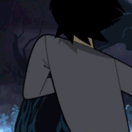
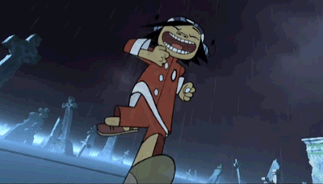
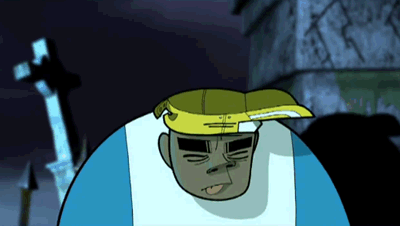

MURDOC NICCALS
As a boy, he was thrown on the doorstep of his father's house one night and was discovered by him on his
way home from the pub
Coincidentally, upon returning from the tavern that night, a filthy black crow was standing on Murdoc's
car, which gave Sebastian a clue of what was there
indoors.Sebastian chased the greasy, smelly creature away and drove the car home. One can only imagine
the disappointment that invaded his intoxicated face when he saw what was in the surprise package.
Murdoc passed into a very abusive childhood. It has been proposed that his many addictions and his
bitter attitude were due to his abusive childhood. Her father, John Paul Sebastian Jacob Niccals,
(or Jacob Sebastian Niccals) was a spiteful drunk who often verbally abused and exploited his children.
The local pub had a routine talent show called "Are You A Star?"
Talent that Murdoc was often forced to participate in could earn his father's drinking money.
Performances organized by his father were always humiliating song and dance numbers,
usually with feathered costumes and tap shoes, including a performance in which Murdoc was
forced dressed up as Pinocchio and sang "I've Got No Strings. " It was from now on that Murdoc
decided to become a musician, and would never go on stage again under the direction of another person.
It would wreak havoc in this jester world. Influencing in him a variety of Metal bands
(his favorite genre) such as Black Sabbath, also getting him into Satanism.
In August 1997, Murdoc and a gang of criminals were in a series of crimes in a stolen Vauxhall Astra.
His next target was Uncle Norm's Organ Emporium where Stuart Pot (AKA 2-D) was working. Murdoc threw
the car out of the store window, crashing directly into Stuart's face, putting him in a coma and giving
him 8-ball fractures. After the incident, Murdoc was arrested and sentenced to
30,000 hours of community service and spent 10 hours a week caring for Stuart.
One day, while skating in his car around a parking lot in Nottingham, Murdoc accidentally sent Stuart
flying through the windshield on a sidewalk,
waking him from his coma. Impressed by Stuart's appearance, Murdoc recruited him as the vocalist and
keyboard player for his band and gave him the 2-D moniker.
| Murdoc Niccals |  |
|---|---|
| rael name: | Murdoc Alphonse Niccals/Murdoc Faust Niccals | Birth: | June 6, 1966(54 years.) |
| Place of birth: | Stoke-on-Trent, Inglaterra |
| Occupation: | bass guitarist |
2-D
2-D was born on May 23, 1978, to David and Rachel Pot. His real name is Stuart Pot (his last name was
often thought to be Tusspot, though his father changed his name to "Pot" shortly before Stuart was born
to avoid him from
getting bullied at school), but is often shortened to Stu-Pot. He was born in Crawley, England and was
being educated at St. Wilfred's School (the same school that educated the members of The Cure). His
father, David Tusspot,
worked as a mechanic and owner of the Tusspot's Fairground. His mother, Rachel Tusspot, was a nurse who
supplied Stuart with headache pills from his tree accident. While Stuart wasn't a very intelligent boy
(indeed, he was often described as "a bit thick"), he was known as a kind person and had a general love
of music. His parents recall a little ten-year-old Stuart bouncing around in his room listening to The
Clash, Augustus Pablo,
The Human League (his favorite band) and many other musicians of the sort. He hit his head when falling
from a tree at the age of eleven,
causing all of his hair to fall out. When it came back it was a deep 'azure blue'.
On August 15, 1997, when he was 19, the drama in his life began, as hooligan Murdoc Niccals, age 31,
purposefully crashed his Vauxhall Astra through the wall of Uncle Norm's
Organ Emporium, where Stuart had been working, in an attempt to ram-raid it and steal the synths.
Murdoc's bumper crashed into Stuart's face[2], landing him with an 8-ball fracture also known as
'hyphema',
although he could still see through his injured eye. Murdoc was arrested and sentenced
to carry out 30,000 hours (1,250 days)
of community service as well as care for the incapacitated Stuart for 10 hours every week.
One year later, in a poor attempt to impress some women, Murdoc performed a 360 in a
Tesco car park in Nottingham with his vehicle. This sent Stuart crashing through the windscreen,
hitting his head on the curb, fracturing his other eye. When Stuart awoke after sliding through
the cement for about a mile, he turned to look at Murdoc. This was the moment when Murdoc knew he
had his frontman. "A blue-haired, black-eyed god", Murdoc recalls. Murdoc nicknamed Stuart '2-D',
which stands for the "Two Dents" in his head. Rather amusingly, Stuart adored his new nickname, dropping
the use of
his birth name completely and even signing formal letters with the first name "Two" and surname "D".
| 2-D |  |
|---|---|
| rael name: | Stuart Harold Pot | Birth: | May 23, 1978(42 years.) |
| Place of birth: | Crawley, Inglaterra. |
| Occupation: | Voice, Keyboard, Melody, Synthesizers |
NOODLE
Noodle was born in Osaka, Japan on October 31, 1990. She spent a portion of her childhood in Japan as a
subject of a
classified Japanese super soldier project under the management of the Japanese scientist, Mr. Kyuzo.
Noodle, along with 22 other children, were trained with the sole purpose of fighting as soldiers of the
Japanese military and government.
After the children were deemed too dangerous and unstable for combat, the project was scrapped. Mr.
Kyuzo was
then ordered to dispose of all possible traces of the failed experiment, as well as its participants.
After killing the other 22 children, Kyuzo was reluctant in killing Noodle. Rather than killing her,
Kyuzo placed her in a state of amnesia through the use of verbal commands. The phrase used
to place Noodle in her state of amnesia was known as Ocean Bacon. After temporarily
clearing her memory of the project, Kyuzo smuggled Noodle to the United Kingdom in a
FedEx crate and falsely reported her death
(along with the other 22 children) to his superiors.
Noodle arrived at the doorstep of Kong Studios in 1998, in a FedEx crate. Once the crate was taken
inside,
Noodle sprung out of the box and performed a guitar solo (which 2-D described as "200 demons screaming
in Arabic. Brilliant!").
She ended her solo with a 20-foot high karate kick and saying a few words in Japanese before bowing and
saying the word "Noodle". This resulted in her earning the name "Noodle"
(her only currently known name) and replacing Paula Cracker as the band's lead guitarist.
| Noodle | |
|---|---|
| rael name: | Unknown | Birth: | October 31, 1990(29 years.) |
| Place of birth: | Osaka, Japan. |
| Occupation: | guitarist |
RUSSEL HOBSS
Russel was born in Brooklyn, New York on June 3, 1975. Known for his good manners and eloquent speech,
he attended the Xavier School For
Young Achievers but was expelled after attacking several
students while possessed by a demon. He fell into a coma for the next four years, at the end of which,
the demon was
finally exorcised from his body by a priest named Father Merrin.
After his old school refused to take him back, Russel attended Brooklyn High School,
where he befriended many of the students that were gifted in hip-hop music.
One rainy night outside a 7-Eleven Store, Russel's companions were killed in a drive-by shooting by a
gang of "gang bangers" driving a black Humvee. They were all wearing red hooded tops.
One of them was wearing a black hood who Russel identified as The Grim Reaper. After the shooting, the
spirits of Russel's friends came to reside in his body, the most prominent being Russel's best friend
Del the Ghost Rapper.
The process of possession permanently turned Russel's eyes milky white.
After the drive-by shooting incident, Russel was sent to the UK for his own safety to live with his
uncle in Belsize Park. He got a job working behind the counter at
Big Rick Black's Record Shack in London's Soho area. That's when he first encountered Murdoc Niccals.
While asking Russel for an obscure 50s record,
Murdoc slipped a bag over Russel's head and forced him out of the shop. Russel was taken back to Kong
Studios
and was impressed with the music that Murdoc was working on, so he chose to stay.
| Russel | |
|---|---|
| rael name: | Russel Hobbs | Birth: | June 3, 1975(44 years.) |
| Place of birth: | Brooklyn, EEUU. |
| Occupation: | drummer |